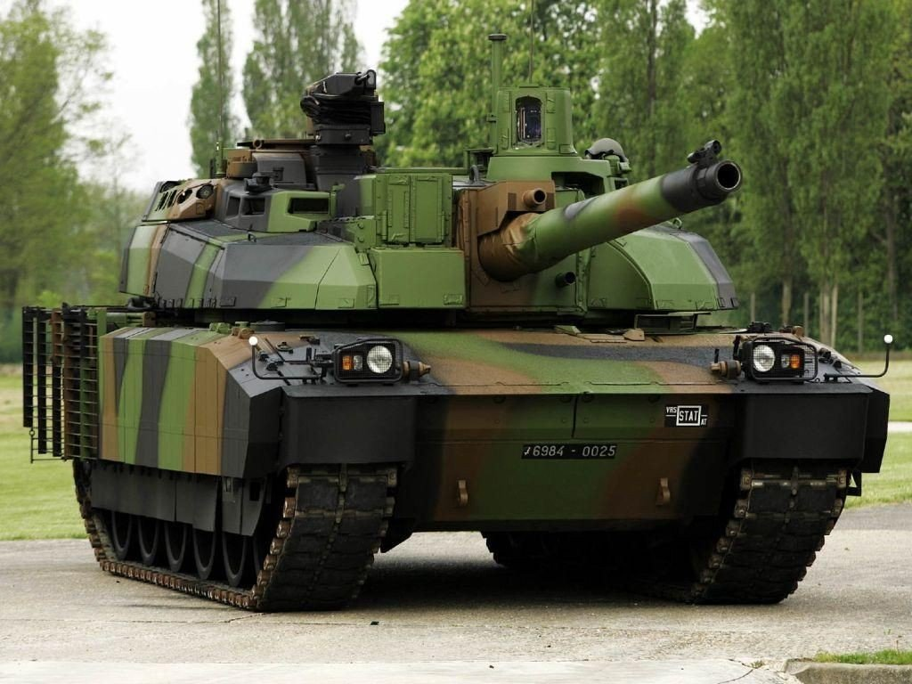
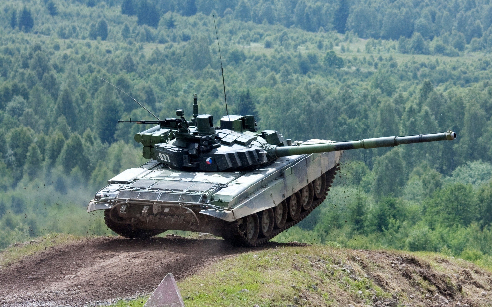
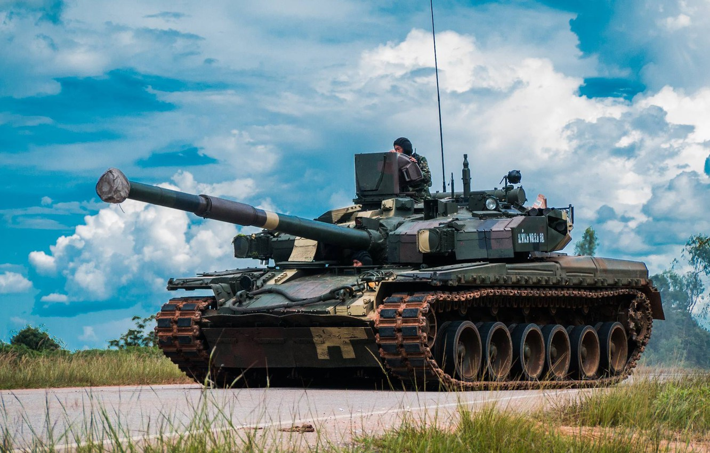
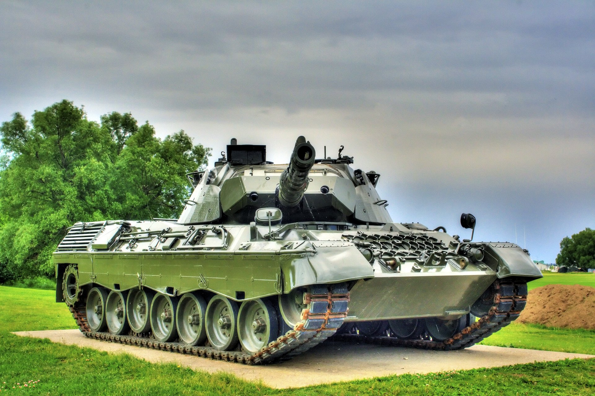
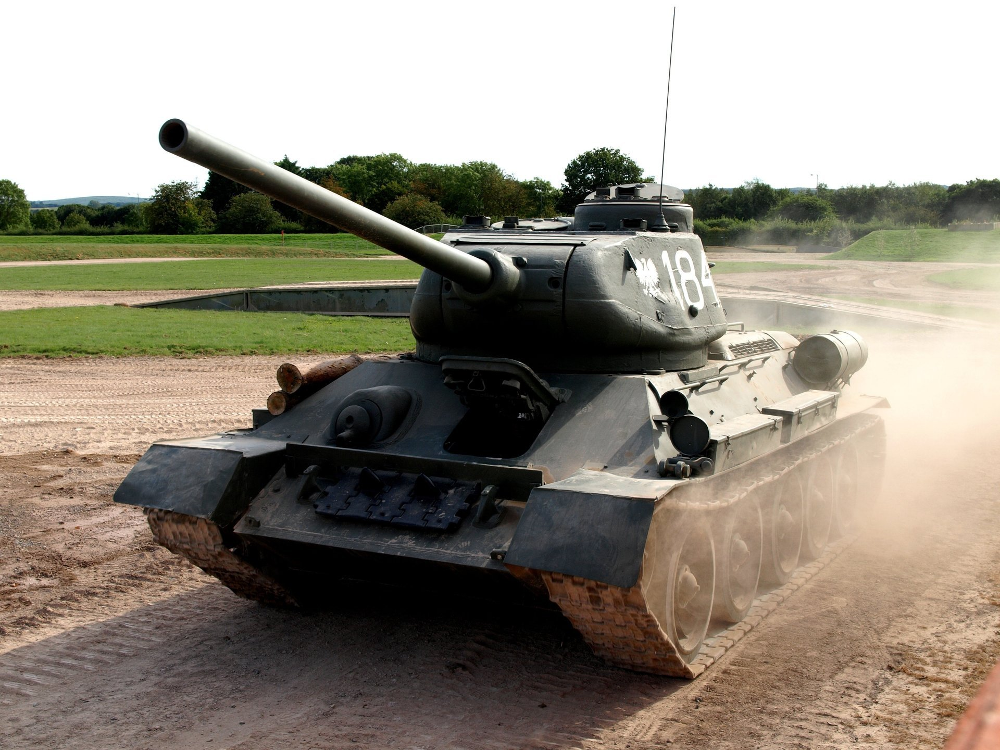
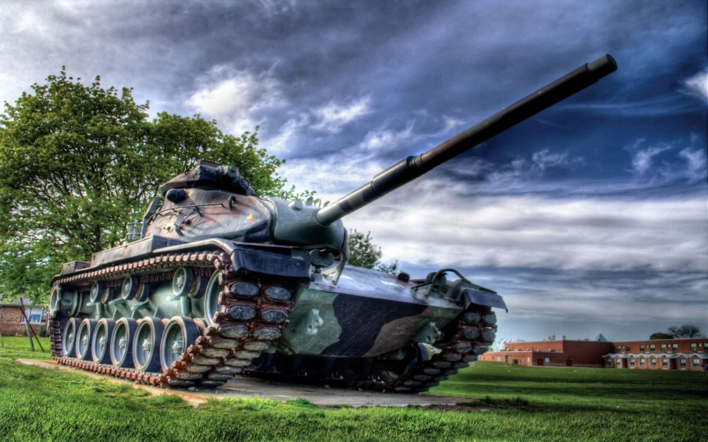
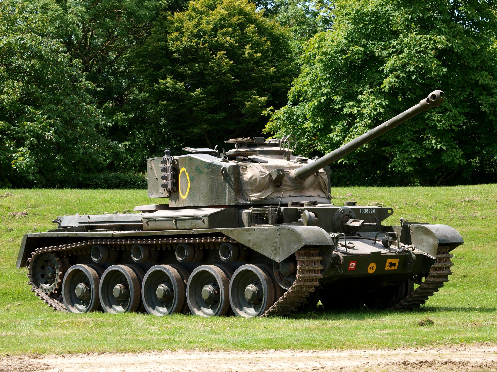
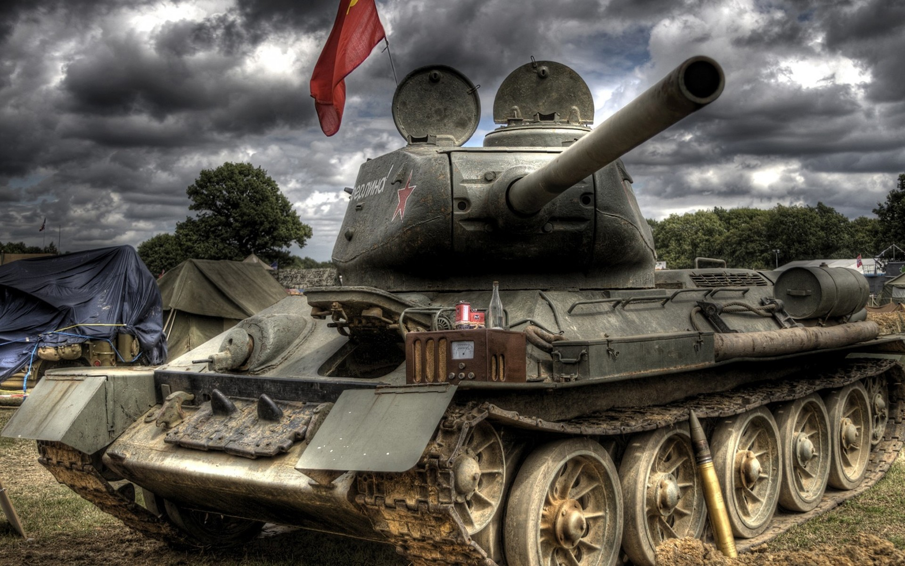

Сайт для лабораторної Танки - Інфо
Коротка інформація
Танк (англ. tank) — бронированная боевая машина, чаще всего на гусеничном ходу, как правило с пушечным и дополнительным пулемётным вооружением, обычно во вращающейся полноповоротной башне, предназначенным в основном для стрельбы прямой наводкой.
На ранних стадиях развития танкостроения иногда выпускали танки с исключительно пулемётным вооружением, а после Второй мировой войны проводились эксперименты по созданию танков с ракетным вооружением. Известны варианты танков с огнемётным вооружением. Определения танка как боевой машины было разным в разных армиях, так как их назначение и способы применения в разные эпохи менялись.









